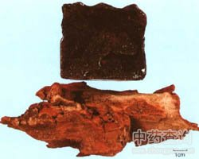

血竭

拼音
Xuè Jié
别名
血竭花
来源
本品为棕榈科植物麒麟竭Daemonorops draco Blume．果实渗出的树脂经加工制成。
生境分布
分布印度尼西亚、马来西亚、伊朗；我国广东、台湾亦有种植。主产马来西亚、印度尼西亚、伊朗等地。
药材特点
麒麟竭，又名：渴留（《唐本草》）。 多年生常绿藤本，长达10～20米，茎被叶鞘并遍生尖刺。羽状复叶在枝梢互生，在下郎有时近对生；小叶互生，线状披针形，长约20～30厘米，宽约3厘米，先端锐尖，基部狭，脉3出平行；叶柄及叶轴具锐刺。肉穗花序，开淡黄色的冠状花，单性，雌雄异株；花被6，排成2轮；雄花雄蕊6，花药长锥形；雌花有不育雄蕊6，雌蕊1，瓶状，子房略呈卵状，密被鳞片，花柱短，柱头3深裂。果实核果状，卵状球形，径约2～3厘米，赤褐色，具黄色鳞片，果实内含深亦色的液状树脂，常由鳞片下渗出，干后如血块样。种子1枚。
性状
本品略呈类圆四方形或方砖形，表面暗红粉，有光泽，附有因摩擦而成的红粉。质硬而脆，破碎面红色，研粉为砖红色。气微，味淡。在水中不溶，在热水中软化。
性味
甘、咸，平。
功能主治
祛瘀定痛，止血生肌。用于跌扑折损，内伤瘀痛；外伤出血不止。
用法用量
内服：研末，1～2g，或入丸剂。外用：研末撒或入膏药用。
化学成分
是一种树脂酯及血竭树脂鞣醇的混合物，约含57～82％；另含无定形的血竭白素约2.5％，黄色血竭树脂烃约14％，不溶性树脂0.3％，植物性渣滓18.4％，赭朴吩0.03％，灰分8.3％。
药理作用
1：抗真菌作用
2：血竭水浸剂（1：2）在试管内对堇色毛癣菌、石膏样毛癣菌、许兰氏黄癣菌等多种致病真菌有不同程度的抑制作用
摘录
《中国药典》